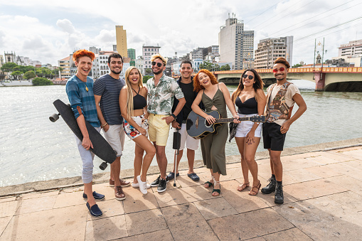
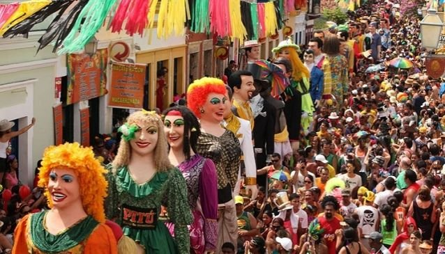

People of Pernambuco
Who lives there? Well, we will find out!
The lack of proper public policies and prevention measures, in addition to the intensification of climate change, make Recife a city particularly at risk. While the level of rain that fell onto the state of Pernambuco is higher than usual, this event is far from being unpredictable. According to a risk analysis from Recife’s own local council, based on data from the Intergovernmental Panel on Climate Change (IPCC Climate Change), the city occupies the 16th position of vulnerability worldwide. The region combines low topography juxtaposed with areas with high risk of landslides, intense urbanization, high population density and high ecological, tourist and economic values.

Ethnographic
This ethnographic project focuses on the frevo tradition of Recife, capital of Brazil’s Pernambuco state. Recife’s annual pre-Lenten Carnival is a spectacle that showcases a variety of local cultural traditions, including frevo—from the word ferver (“to boil”), it is an energetic music and dance that symbolizes Pernambucan culture. Loud brass instruments provide the fast-paced music, and dancers in bright costumes hold tri-colored sombrinhas, or small parasols, as they perform acrobatic feats, dropping to their knees before springing up into high airborne splits. Frevo originates from capoeira, a better known Afro-Brazilian art form, but it represents a particular Pernambucan regional variation on Brazilian national identity.
Frevo is listed among Brazil’s intangible cultural heritage for its role in Pernambuco’s mestiçagem, or “mixed” racial/cultural identity formation. Frevo represents a regional variation on Brazilian national identity and narrates notions of identity that contribute to social empowerment and valuation of popular culture. This research on frevo and other popular dances of the region aims to understand the political role of such performed cultural expression, how it serves to engage communities and empower marginalized individuals.
Carnival
'Recife's Multicultural Carnival', as it is called, is democratic, inclusive and diversified. It does not take place in one single area; instead, different sites ('pólos', Portuguese for 'poles') are scattered across Recife Old Town (Recife Antigo), and other districts, making it possible to enjoy the party no matter where you are. This has several practical advantages: though the streets get very crowded (after all, it is the largest street Carnival in the world), not everyone is rushing to one single site, making it easier to get around and find a spot. Also the different pólos have specific types of attractions for each audience, so that you can choose just what kind of party you want to be a part of.
The pólos are the following: Pólo das Agremiações; Corredor do Frevo; Pólo Afro; Pólo das fantasias e Carnaval Infantil; Pólo das Tradições; Pólo de Todos os Frevos; Pólo de Todos os Ritmos; Pólo Mangue - Festival Rec Beat; Pólo Multicultural; Pólos Descentralizados; Pólos Comunitários.
The rhythms bouncing off the streets during those days are countless: samba, maracatu, mangue beat, axé and many more. Only one, however, is the trademark of Pernambuco; an Intangible Cultural Heritage of Mankind according to Unesco: the Frevo. This fast-paced rhythm is played all over Recife by parading brass orchestras and you're also likely to find Frevo dancers showing their acrobatic moves while holding a colourful umbrella.
In Recife, the first day of the celebration is also the biggest. Carnival officially starts with the 'Galo da Madrugada', a street party in which people follow a 27 meter (88.5 feet) tall cockerel or rooster across the streets of Recife Old Town, hailing the arrival of the festivity. The Galo da Madrugada has gone into the Guinness World Record Book as the biggest street party on Earth, gathering up to two million people.
With so many attractions, the inevitable feeling is that the four days pass by too fast. Thinking of that, the town hall has officially added another week to the celebration. The 'Semana Pré' (Pre Week) takes place right before the official Carnival date and stretches the party to a total of 10 days. But as a matter of fact, from January on, parties, rehearsals and the sort are already taking place all across the State. The 'Baile Municipal' and 'Bal Masqué' are the most traditional pre-Carnival balls, while others such as 'Enquanto isso na Sala da Justiça' and 'Guaiamum Treloso' are more youthful and irreverent.
